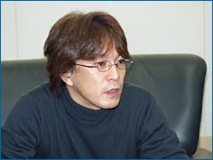
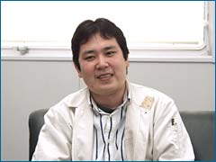
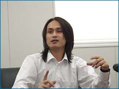
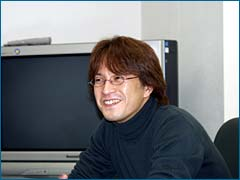
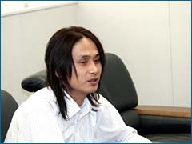

N.O.M このソフトは、いつ頃から作っていたんですか？

青沼 昨年のE3の少し前ですが、『コネクティビティ(編註：ここではGBAとGCの連動を指す)』をテーマに色々と試行錯誤していたんですね。ゼルダはゼルダで新作を作るつもりでいたんですが、どうせなら一緒にしちゃおうかと。ゼルダシリーズのなかで、コネクティビティを生かしたプレイを生み出せないかということで始まりました。３つのモードは、それぞれ違うタイトルで出すつもりだったんです。ハイラルアドベンチャーとシャドウバトルは鈴木が、ナビトラッカーズは土山が担当しました。
N.O.M 方向性の違うゲームモードが３つ、しかもGBAとの連動がメインで押し出されていますね。
鈴木 僕は以前からコネクティビティ開発に携わっていて、今回はその集大成とでも言うべきものにしたかったんです。これまでのコネクティビティって、単純にGBAをコントローラーとして扱っているだけだったり、いわゆるオマケ的要素だった部分が否めないんですよね。でも、GBAと連動しているからこそできる表現や、それを最大に活かした遊び、システム的には受信時のストレス解消という部分をどうしても入れたかったんです。
青沼 本当はハイラルアドベンチャーとナビトラッカーズだけのはずだったんですよ。そこへ、鈴木がシャドウバトルを提案してきて。いいのかなぁ、大丈夫かなぁと思いました。
鈴木 モードが３つ入ることで、ゲーム性の幅を出したかったんです。「単純に斬り合うゲームなら、追加するのもそんなに大変じゃないだろう」ということで。大きな間違いでしたが(笑)。
N.O.M ハイラルアドベンチャーがこの形になったのはなぜなんですか。
青沼 E3にいくつか出展した時、レースっぽい遊びだけではなくて謎解きも欲しいという声が上がっていました。最近はオンラインゲームでの同時プレイなんかも普及していますし、そういった部分を意識してできたのがハイラルアドベンチャーなんですよ。

鈴木 ただ、『ひとりで遊べる』というのは絶対に外せないと思いました。やっぱり、マルチプレイの環境っていきなり準備できるものではないと思うんです。まずはソフトを買った人が遊んで、次第に友達に声をかけて…という感じになりますよね。だから、ひとりで遊べるモードを入れるのは絶対条件でした。『神々のトライフォース』あたりのスタッフが集結してがんばってくれたので、すごくボリュームが大きいですよ。彼らが悲鳴を上げるほどの内容になっています。
N.O.M 意外に大変だったというシャドウバトルですが？
鈴木 これは斬り合いの単純なゲームなんですが、開発としては「テレビ画面と手元のギャップを強調できるもの」にしたかったというのがあります。やはりコネクティビティを強く打ち出すということで。シャドウバトルでは、プレイヤーの性格が色濃く出ますね。卑怯者ほど勝ちますよ(笑)。
青沼 謎解き部分はハイラルアドベンチャー、バトルはシャドウバトル、という感じでキッチリ分けたのが良かったと思います。これはいちばん最初の「コネクティビティを使ったかくれんぼ」というコンセプトがもっとも残っているモードですね。
|
N.O.M 土山さんが担当したナビトラッカーズはどうでしょう。
土山 ハイラルアドベンチャーとはまったく違うものということと、画面からプレイヤーに話しかけてくれるという「実在感」を入れたい、という部分からスタートしました。
青沼 これの大元は、８年前にサテラビューという衛星通信を使った『マーヴェラス』というゲームです。ラジオを聴きながらスタンプ集めをしよう、というような。それをコネクティビティに置き換えて、音声ガイドのキャラクターをテトラにして、海賊たちを出して、という風にしたんですよ。実は僕ら３人は、かつて衛星放送事業に従事していたという共通点があります。ここへ来て思いがけず再会、みたいな感じです(笑)。

土山 企画段階では自動車のナビゲーションみたいに女性が助手席にいて、色々と指示してくれたりコメントをくれたりするものを考えていました。でもそれだけじゃなく、それぞれの年代の人が聴いて楽しめる声を入れたかったんですね。それと、はじめは会話みたいな感じのやり取りを入れていたんですが、単純に名前を呼んでもらえるって嬉しいよねということで、取捨選択があってこのバージョンになりました。
N.O.M 内容が当初の予定からは大幅に改変されたという話を伺いましたが。
土山 先日までは、集めるものがスタンプだったんですが。ゼルダというテイストを考えた時に、「海賊からもらうもの」ということで海賊のメダルに変更されました。
青沼 宮本が「そこを変えると、ゲームのイメージがガラッと変わる」と断言したんです。些細なことのように思うかもしれませんが、実際に変更したら、この世界観と違和感なくピッタリ一致しました。仕様をひとつ変えるということは、音声録音から始まって、とにかく全部が変わるので大変なんです。でも、これは変えた方がいいということで…。
N.O.M まさに「鶴の一声」ですね。

青沼 そうですね。こちらとしては精一杯やったつもりで見せるんですが、それだけに「ちゃぶ台返し」が起きた時は大変です(笑)。でも、もちろんそれだけのことはあるんですよね。
N.O.M ところでなぜ『メダル』なんでしょう。
土山 やはり、ものを集めていくという手応えがあるって重要じゃないかと。GCから手元のGBAにアイテムが飛んで来る時に「チャリンチャリン」という音が鳴る、その質感でリアルさを実感できたりするんですよね。
青沼 それに、「海賊相手にスタンプっていうのも、ねぇ？」って(笑)。
N.O.M 途中でクイズやビンゴなんかも入って来ますね。
土山 画面が分かれていることでできる遊び、というものを入れたかったんです。ベースの遊びと並行して、ミニゲームをやらせたらどうなるかなと。「こんなことやってる間に、メダル取られちゃうよ」と焦らせたかったというか(笑)。
N.O.M プレイをしていて、キャラが声をかけてくれるというのがとても嬉しかったです。

土山 テトラはちゃんとプレイヤーのメダルの数なんかをチェックしていて、その様子によって声をかけてくれるんです。AI的な要素のプログラムですね。
青沼 キャラの目が強調されているのに気づかれると思うんですが、やはり「見てくれている」ということの表現なんですよ。これには『風のタクト』のスタッフも協力してくれていますが、自分たちのキャラが動いて喋るというのは嬉しいようです。
|
N.O.M 今回の開発にあたって、どういったことを感じられましたか？
青沼 これまで３Dばかりに関わっていたので、２D開発となると、やり尽くしていたような気になっていました。でも改めて着手すると、プラットホームがGCなのでこれがもう全然違うわけですよ。言うなれば『2.5D』とでも言うような表現ができるんですね。それだけに、ディレクターのふたりががんばるんですよ。ふたりは志が高すぎてがんばっちゃうんですが、僕は納期があるのでそれを調整するのに必死でした(笑)。
鈴木 僕はこれを「ウルトラファミコン」だと思って作っていました。GBAの２Dでは表現できないことがたくさん詰まっています。
青沼 GCは本当に色々なことが試せる土壌があって、ファミコンでは実現できなかった最新技術が詰め込んであります。そしてこのゲームは、ゼルダシリーズに触ったことがない初心者も入り込めることを意識しました。どこからでも入れて、入ったらどっぷり遊んじゃうというような。もちろん、古くからシリーズを遊んでくれているユーザーも楽しめるはずです。
鈴木 やりごたえは過去最大級のボリュームだと思います。こってり遊べるのがいちばんの魅力じゃないでしょうか。
N.O.M では、最後にメッセージをお願いします。
 鈴木 『４つの剣＋』は『４つの剣』のちょっとオマケバージョンというわけではなく、「＋(プラス)」どころか「＋＋＋(スリープラス)」くらいの強力なソフトです(笑)。とくにハイラルアドベンチャーは内容的にもボリューム的にも『神々のトライフォース』以来の本格的２Ｄゼルダです。ぜひ独立したゼルダシリーズの１本として遊んでください。
鈴木 『４つの剣＋』は『４つの剣』のちょっとオマケバージョンというわけではなく、「＋(プラス)」どころか「＋＋＋(スリープラス)」くらいの強力なソフトです(笑)。とくにハイラルアドベンチャーは内容的にもボリューム的にも『神々のトライフォース』以来の本格的２Ｄゼルダです。ぜひ独立したゼルダシリーズの１本として遊んでください。
土山 どのモードも楽しめると思います。ナビトラッカーズは、名前を呼ばれることで楽しさが倍増するはずです。子供さんから大人まで遊べて、ちょっと遊べばすぐ慣れることができます。みんなで大騒ぎして遊んでほしいと思います。
青沼 これまでディレクターばかりやってきたのですが、今回初めてプロデューサーという立場でふたりのディレクターが作ったものをプレイしました。ゼルダチームは志が高いので、プロデューサーとしてはとても嬉しいし、頼もしかったです。『ゼルダコレクション』もあることですし、これはぜひゼルダシリーズの集大成として楽しんでもらいたいと思います。
N.O.M どうもありがとうございました！
|